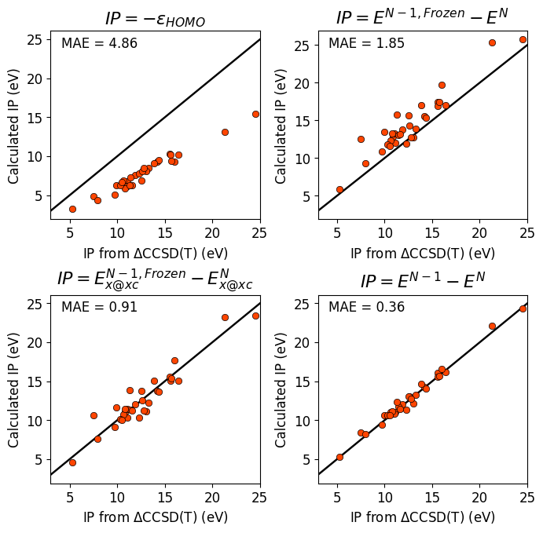
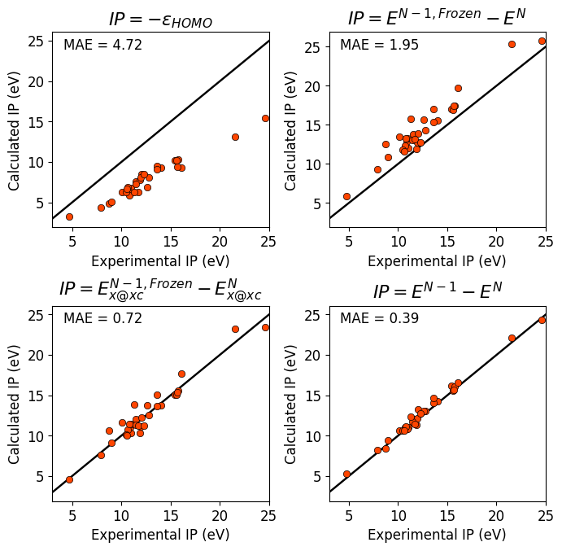
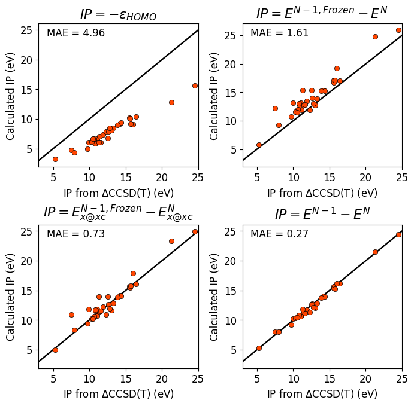
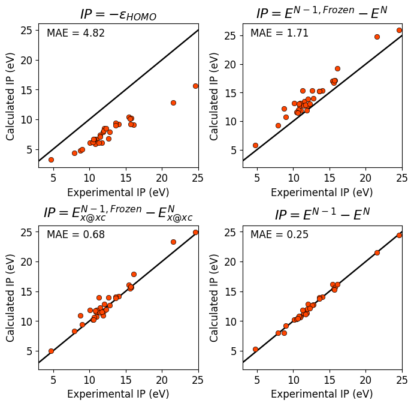
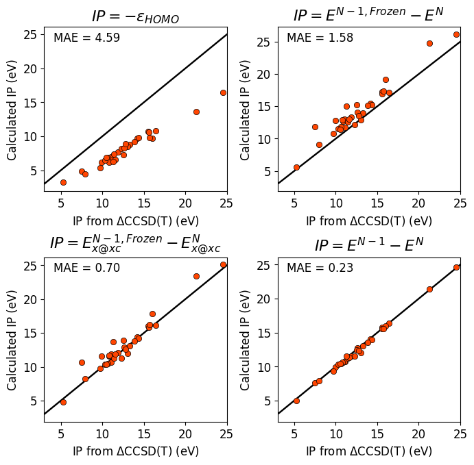
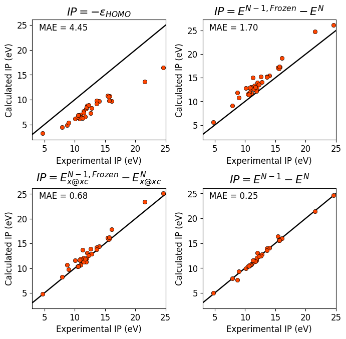

IPs via various relationships#
Author: Egor Trushin
Date created: 02/08/2024
Last modified: 15/08/2025
Introduction#
In density functional theory (DFT) calculations, the first ionization potential (IP) can be determined using three different ways, which should yield the same result when an exact exchange-correlation functional is employed:
(1) The first ionization potential can be calculated as the negative of the highest occupied molecular orbital (HOMO) energy:
(2) The IP can also be determined as the difference in total energy between the neutral system and the ionized system, obtained from two self-consistent calculations:
This way is to provide significantly more accurate IPs compared to the HOMO energy approach.
(3) A third approach involves calculating the total energy difference where the energy of the \((N-1)\)-electron system is evaluated non-self-consistently using the orbitals from the self-consistent \(N\)-electron calculation:
With approximate exchange-correlation functionals, this method generally offers IP values more accurate than those obtained from the HOMO energy, but less accurate than the fully self-consistent total energy difference.
In this notebook, I will demonstrate that modifying the third approach to evaluate the total energy difference non-self-consistently using only the exchange part of the exchange-correlation functional (as used in the self-consistent calculation) can significantly improve accuracy:
This modification reduces the mean absolute error (MAE) between the calculated IPs and accurate reference data by more than a factor of two.
The relationship \(IP = E^{N-1, Frozen}_{x@xc} - E^{N}_{x@xc}\) offers a promising practical method for evaluating the first IP in DFT calculations.
import json
import os
import numpy as np
from tqdm import tqdm
from pyscf import gto, dft
from sets.GW100 import systems, reference
import matplotlib
import matplotlib.pyplot as plt
matplotlib.rcParams["axes.unicode_minus"] = False
import pyscf
print("PySCF version:", pyscf.__version__)
PySCF version: 2.10.0
BASIS = 'cc-pVTZ'
AUXBASIS = "cc-pVTZ-RIFIT"
MAX_NELEC = 20 # you can increase this parameter
ATOMS_ALLOWED = ["H", "He", "Li", "Be", "B",\
"C", "N", "O", "F", "Ne",\
"Na", "Mg", "Al", "Si", "P",\
"S", "Cl", "Ar"]
if not os.path.exists("json"):
os.makedirs("json")
def calc_n_scf(mol_obj, xc, auxbasis):
"""Self-consistent calculation of N-electron system."""
mf = dft.RKS(mol_obj, xc=xc).density_fit(auxbasis=auxbasis).run()
dm = mf.make_rdm1()
e_homo = mf.mo_energy[int(sum(mf.mo_occ)/2.)-1]
return mf.e_tot, dm, mf.mo_coeff, mf.mo_occ, e_homo
def calc_nm1_scf(mol_obj, xc, auxbasis):
"""Self-consistent calculation of (N-1)-electron system."""
mf = dft.UKS(mol_obj, xc=xc).density_fit(auxbasis=auxbasis).run()
return mf.e_tot
def calc_n_noscf(mol_obj, xc, dm, auxbasis):
"""Non-self-consistent calculation of N-electron system."""
mf = dft.RKS(mol_obj, xc=xc).density_fit(auxbasis=auxbasis)
mf.xc = xc
mf.max_cycle=0
mf.kernel(dm0=dm)
return mf.e_tot
def calc_nm1_noscf(mol_obj, xc, mo0, occ, auxbasis):
"""Non-self-consistent calculation of (N-1)-electron system."""
mf = dft.UKS(mol_obj, xc=xc).density_fit(auxbasis=auxbasis)
mf.max_cycle=0
dm = mf.make_rdm1(mo0, occ)
mf.kernel(dm0=dm)
return mf.e_tot
def pyscf_atom_input(charges, xyz):
"""Construct input for mol.atom from charges and xyz."""
atom_input_ = []
for i in range(len(charges)):
atom_input_.append([charges[i], tuple(xyz[i])])
return atom_input_
def build_mol(charges, coords, basis):
"""Determine the number of electrons for given system."""
mol = gto.Mole()
mol.verbose = 0
mol.build(atom=pyscf_atom_input(charges, coords), basis=basis)
return mol
def eval_ips(systems2use, xc, x, auxbasis):
e_homo = []
ips_xc_x_frozen = []
ips_xc_frozen = []
ips_xc = []
for s in tqdm(systems2use):
mol = build_mol(systems[s]["atoms"], systems[s]["coords"], BASIS)
e_tot_xc_scf, dm, mo0, occ, e_h = calc_n_scf(mol, xc, auxbasis)
e_tot_x_nonscf = calc_n_noscf(mol, x, dm, auxbasis)
mol.spin=1
mol.charge=1
mol.build(False,False)
occ = np.stack((occ, occ))/2.
occ[1][mol.nelec[1]] = 0
mo0 = np.stack((mo0, mo0))
# Non-self-consistent calculation for ion only with exchange part of xc-functional
e_tot_ion_x_nonscf = calc_nm1_noscf(mol, x, mo0, occ, auxbasis)
# Non-self-consistent calculation for ion only with complete xc-functional
e_tot_ion_xc_nonscf = calc_nm1_noscf(mol, xc, mo0, occ, auxbasis)
# Self-consistent calculation for ion only with complete xc-functional
e_tot_ion_xc_scf = calc_nm1_scf(mol, xc, auxbasis)
e_homo.append(e_h*27.2114)
ips_xc_frozen.append((e_tot_ion_xc_nonscf-e_tot_xc_scf)*27.2114)
ips_xc_x_frozen.append((e_tot_ion_x_nonscf-e_tot_x_nonscf)*27.2114)
ips_xc.append((e_tot_ion_xc_scf-e_tot_xc_scf)*27.2114)
return e_homo, ips_xc_frozen, ips_xc_x_frozen, ips_xc
def plot_one(ax, mae, res, ref, title, xlabel):
ax.set_title(title)
plt.text(0.05, 0.91, f"MAE ={mae:5.2f}", fontsize=12, weight="medium", transform=ax.transAxes)
x = np.linspace(3, 25, 2)
ax.plot(x, fline(x), 'k-')
ax.plot(ref, res, 'o', color='orangered', markeredgecolor='black', markersize=6, markeredgewidth=0.5)
ax.set_xlim(3, 25)
ax.set_xlabel(xlabel, fontsize=12)
ax.set_ylabel("Calculated IP (eV)", fontsize=12)
def plot_all(e_homo, ips_xc_frozen, ips_xc_x_frozen, ips_xc, ips_ccsdt, source):
fig, axs = plt.subplots(2, 2, figsize=(7, 6.5))
plt.tight_layout(pad=1.4)
plt.subplots_adjust(hspace=0.4)
mae = np.mean(np.abs(-np.array(e_homo)-np.array(ips_ccsdt)))
plot_one(axs[0, 0], mae, -np.array(e_homo), ips_ccsdt, "$IP = -\epsilon_{HOMO}$", source)
mae = np.mean(np.abs(np.array(ips_xc_frozen)-np.array(ips_ccsdt)))
plot_one(axs[0, 1], mae, ips_xc_frozen, ips_ccsdt, "$IP = E^{N-1, Frozen} - E^{N}$", source)
mae = np.mean(np.abs(np.array(ips_xc_x_frozen)-np.array(ips_ccsdt)))
plot_one(axs[1, 0], mae, ips_xc_x_frozen, ips_ccsdt, "$IP = E^{N-1, Frozen}_{x@xc} - E^{N}_{x@xc}$", source)
mae = np.mean(np.abs(np.array(ips_xc)-np.array(ips_ccsdt)))
plot_one(axs[1, 1], mae, ips_xc, ips_ccsdt, "$IP = E^{N-1} - E^{N}$", source)
plt.show()
fline = lambda x : x
# Based on ATOMS_ALLOWED and MAX_NELEC, determine systems to use
systems2use = []
for s in sorted(systems):
mol2use = True
for a in systems[s]["atoms"]:
if a not in ATOMS_ALLOWED:
mol2use = False
if mol2use:
mol = build_mol(systems[s]["atoms"], systems[s]["coords"], '3-21g')
if sum(mol.atom_charges()) > MAX_NELEC:
mol2use = False
if mol2use:
systems2use.append(s)
if '108-95-2v2' in systems2use:
systems2use.remove('108-95-2v2')
print("Total number of systems:", len(list(systems.keys())))
print("Number of systems to use:", len(systems2use))
Total number of systems: 102
Number of systems to use: 32
# Collect reference IPs from delta CCSD(T) calculations
ips_ccsdt = []
for s in systems2use:
ip_ccsdt = reference[s]['IP,CCSD(T)']*27.2114
ips_ccsdt.append(ip_ccsdt)
# Collect reference IPs from experiment
ips_expt = []
for s in systems2use:
ip_expt = reference[s]['IP,Experiment']*27.2114
ips_expt.append(ip_expt)
LDA#
json_filename = f'json/LDA_{BASIS}_{MAX_NELEC}.json'
if os.path.isfile(json_filename):
print(f'Reading results from {json_filename}')
with open(json_filename, 'r') as file_obj:
(systems2use, e_homo_lda, ips_xc_frozen_lda, ips_xc_x_frozen_lda, ips_xc_lda) = json.load(file_obj)
else:
e_homo_lda, ips_xc_frozen_lda, ips_xc_x_frozen_lda, ips_xc_lda = eval_ips(systems2use, 'lda,vwn', 'lda,', AUXBASIS)
with open(json_filename, 'w', encoding='utf-8') as file_obj:
json.dump((systems2use, e_homo_lda, ips_xc_frozen_lda, ips_xc_x_frozen_lda, ips_xc_lda), file_obj, ensure_ascii=False, indent=4)
Reading results from json/LDA_cc-pVTZ_20.json
plot_all(e_homo_lda, ips_xc_frozen_lda, ips_xc_x_frozen_lda, ips_xc_lda, ips_ccsdt, "IP from $\\Delta$CCSD(T) (eV)")
plot_all(e_homo_lda, ips_xc_frozen_lda, ips_xc_x_frozen_lda, ips_xc_lda, ips_expt, "Experimental IP (eV)")


PBE#
json_filename = f'json/PBE_{BASIS}_{MAX_NELEC}.json'
if os.path.isfile(json_filename):
print(f'Reading results from {json_filename}')
with open(json_filename, 'r') as file_obj:
(systems2use, e_homo_pbe, ips_xc_frozen_pbe, ips_xc_x_frozen_pbe, ips_xc_pbe) = json.load(file_obj)
else:
e_homo_pbe, ips_xc_frozen_pbe, ips_xc_x_frozen_pbe, ips_xc_pbe = eval_ips(systems2use, 'pbe', 'pbe,', AUXBASIS)
with open(json_filename, 'w', encoding='utf-8') as file_obj:
json.dump((systems2use, e_homo_pbe, ips_xc_frozen_pbe, ips_xc_x_frozen_pbe, ips_xc_pbe), file_obj, ensure_ascii=False, indent=4)
plot_all(e_homo_pbe, ips_xc_frozen_pbe, ips_xc_x_frozen_pbe, ips_xc_pbe, ips_ccsdt, "IP from $\\Delta$CCSD(T) (eV)")
plot_all(e_homo_pbe, ips_xc_frozen_pbe, ips_xc_x_frozen_pbe, ips_xc_pbe, ips_expt, "Experimental IP (eV)")
Reading results from json/PBE_cc-pVTZ_20.json


r\(^2\)SCAN#
json_filename = f'json/r2SCAN_{BASIS}_{MAX_NELEC}.json'
if os.path.isfile(json_filename):
print(f'Reading results from {json_filename}')
with open(json_filename, 'r') as file_obj:
(systems2use, e_homo_r2scan, ips_xc_frozen_r2scan, ips_xc_x_frozen_r2scan, ips_xc_r2scan) = json.load(file_obj)
else:
e_homo_r2scan, ips_xc_frozen_r2scan, ips_xc_x_frozen_r2scan, ips_xc_r2scan = eval_ips(systems2use, 'r2SCAN', 'r2SCAN,', AUXBASIS)
with open(json_filename, 'w', encoding='utf-8') as file_obj:
json.dump((systems2use, e_homo_r2scan, ips_xc_frozen_r2scan, ips_xc_x_frozen_r2scan, ips_xc_r2scan), file_obj, ensure_ascii=False, indent=4)
plot_all(e_homo_r2scan, ips_xc_frozen_r2scan, ips_xc_x_frozen_r2scan, ips_xc_r2scan, ips_ccsdt, "IP from $\\Delta$CCSD(T) (eV)")
plot_all(e_homo_r2scan, ips_xc_frozen_r2scan, ips_xc_x_frozen_r2scan, ips_xc_r2scan, ips_expt, "Experimental IP (eV)")
Reading results from json/r2SCAN_cc-pVTZ_20.json

